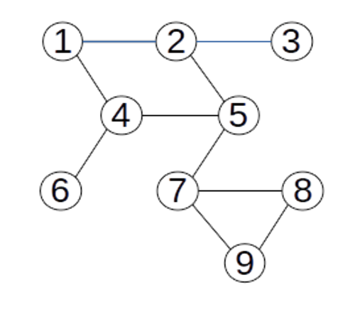
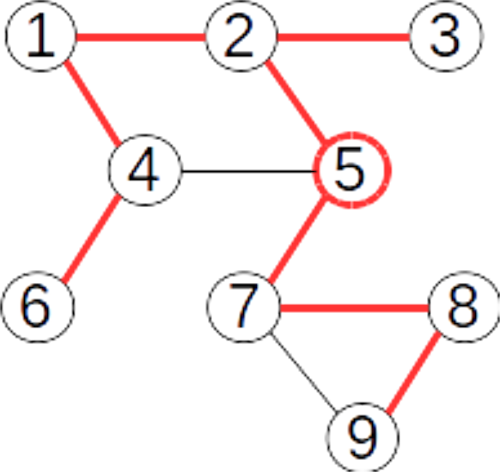
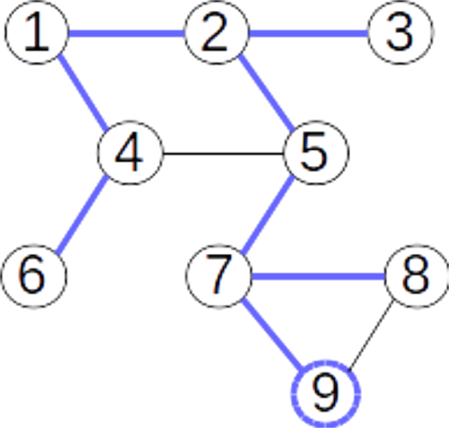

Prin parcurgerea unui graf neorientat se înțelege examinarea în mod sistematic a vârfurilor, plecând dintr-un vârf dat start, astfel încât fiecare vârf accesibil din start pe muchii incidente două câte două să fie vizitat o singură dată.
Trecerea de la un vârf x la altul se face prin examinarea, într-o anumită ordine a vecinilor săi.
Parcurgerile grafurilor sunt frecvent utilizate în rezolvarea multor probleme.
Parcurgerea în adâncime reprezintă explorarea „naturală” a unui graf neorientat.
Este foarte asemănătoare cu modul în care un turist vizitează un oraș în care sunt obiective turistice (vârfurile grafului) și căi de acces între obiective (muchiile).
Vizitarea orașului va avea loc din aproape în aproape: se pleacă de la un obiectiv de pornire, se continuă cu un obiectiv învecinat cu acesta, apoi unul învecinat cu al doilea, etc.
Parcurgerea din nodul 1: 1 2 3 5 4 6 7 8 9
Parcurgerea din nodul 2: 2 1 4 5 7 8 9 6 3
Parcurgerea din nodul 5: 5 2 1 4 6 3 7 8 9
Parcurgerea din nodul 9: 9 7 5 2 1 4 6 3 8

Implementare C++
voiddfs(int k){
v[k]=1; //vizităm vârful curent xfor(int i=1;i<=n;i++) //determinăm vecinii nevizitați a lui xif(a[k][i]==1 and v[i]==0)
dfs(i); //continuăm parcurgerea cu vecinul curent i
}
În urma parcurgerii în adâncime, muchiile folosite pentru parcurgere formează un arbore.
Acest arbore este graf parțial al grafului dat (dacă graful este conex), și se numește arbore parțial de parcurgere.
Arborii de parcurgere ai unui graf sunt diferiți, în funcție de vârful de start.
Acest arbore poate fi stocat în memorie prin intermediul unui vector de tați: t[k]=0, vârful k este rădăcina arborelui, t[k]=x, vârful x este tatăl vârfului k.
Arborele de parcurgere pentru vârful de start 5
Arborele de parcurgere pentru vârful de start 9


Implementare C++
voiddfs(int k, int tata){
v[k]=1; //vizităm vârful curent x
t[k]=tata; //completăm vectorul de tațifor(int i=1;i<=n;i++) //determinăm vecinii nevizitați ai lui xif(a[k][i]==1 and v[i]==0)
dfs(i,k); //continuăm parcurgerea cu vecinul curent i//acesta îl va avea ca tată pe k
}